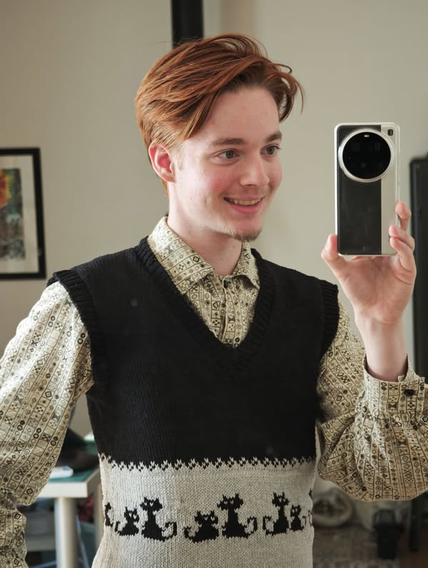
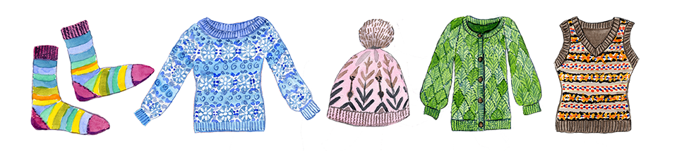
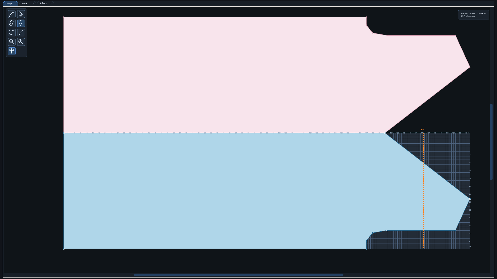
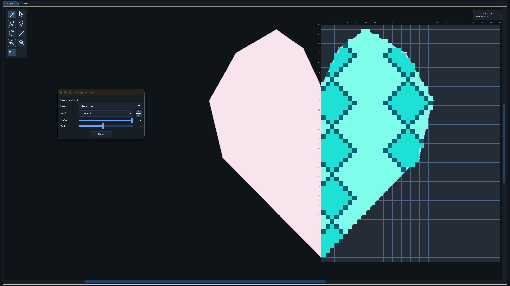
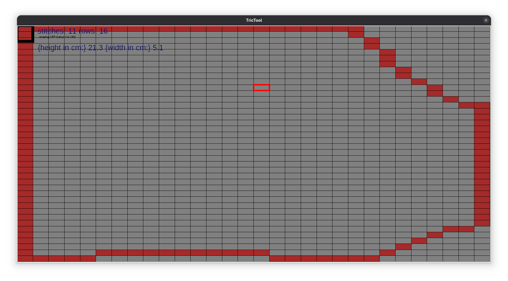
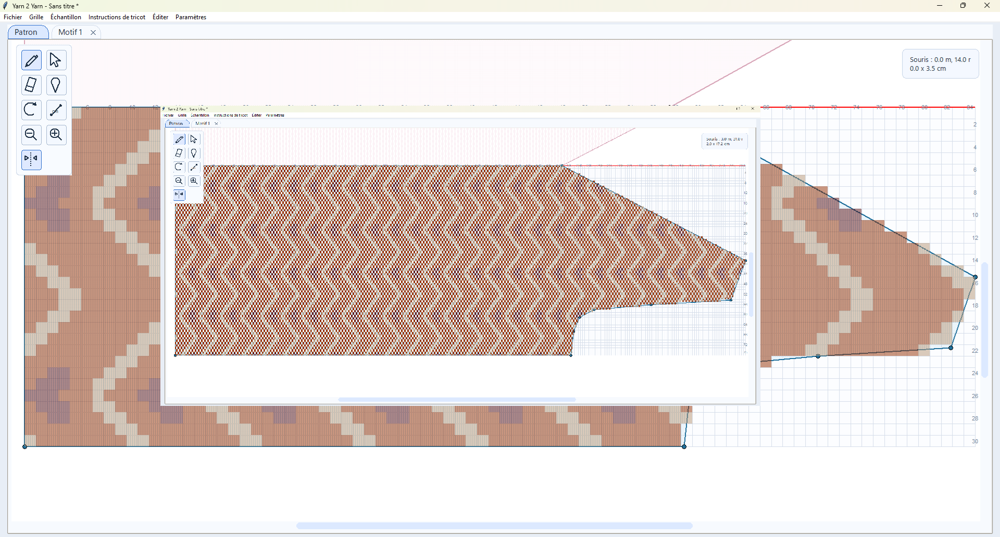
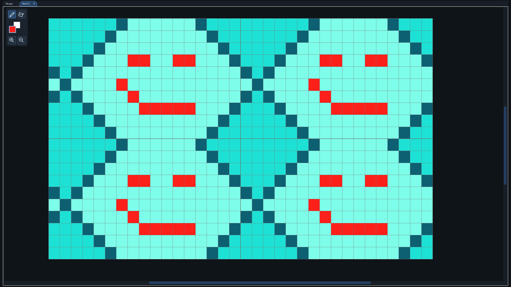
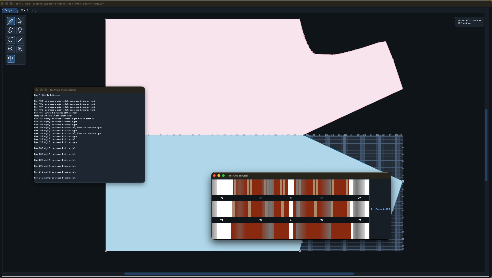

c'est moi 👋A quick story
High school. A student watches his mother juggle patterns with whatever wool is at home. Years later — engineering school — he ships Yarn 2 Yarn.
Follow my processYarn 2 Yarn recomputes stitch and row counts for the yarn you already have on hand. Draw or import a pattern, set your gauge, get clean row-by-row instructions and a printable grid.
One-time · Two computers · Share with a friend

Why it matters
Keep the design you love and use the yarn you already own. Yarn 2 Yarn recomputes stitch and row counts for your gauge, and hands you clean, printable instructions ready to cast on.

The editor
A clean canvas built for makers. Sketch a garment shape or import a pattern, set your gauge, and Yarn 2 Yarn hands back row-by-row instructions and a printable grid.
Six good reasons
Enter original gauge and target yarn — new stitch and row counts, instantly.
Row-by-row text, printable grid, or graphical instructions.
Save patterns to share with friends and convert instantly for their yarn.
Visual editor with adjustable control points and grid snap.
English, French, German, Hindi, Chinese, Portuguese, Russian.
Draw the pattern you want, use the yarn you love, or invent a new motif.
Screenshots






c'est moi 👋A quick story
High school. A student watches his mother juggle patterns with whatever wool is at home. Years later — engineering school — he ships Yarn 2 Yarn.
Follow my processWho is this for?
Hobby knitters
Small designers
Yarn shops
Community knitting groups
Buy once, forever
One for you, one for a friend. Share patterns freely.
Minimum requirements
Functionalities & interface
A full printable walkthrough of every feature.